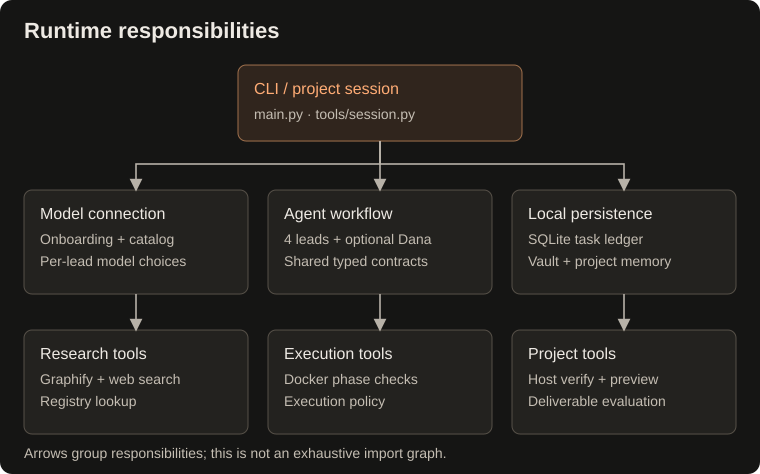

Architecture
Component connections


Arrows show which component uses another. Shared contracts define stage outputs, handoffs, and checkpoints used by orchestration, agents, and the ledger. Vault tools support graph lookup and project-note links; each agent saves its own stage artifacts.
Repository map
.
├── main.py CLI, task IDs, routing, and orchestration
├── contracts/
│ └── __init__.py Shared typed checkpoints, stage outputs, and handoff contracts
├── agents/
│ ├── natasha.py Structured briefs and routing
│ ├── odin.py Research reports
│ ├── taghi.py Specifications and outcome-driven execution phases
│ ├── diba.py UI/UX design systems, Tailwind tokens, and interactive states
│ ├── execution_policy.py Phase validation ordering, retry budgets, and recovery policy
│ ├── review_renderer.py Markdown code review report rendering
│ ├── meti.py Implementation coordination and Docker tools
│ └── dana.py Principal Quality Supervisor & autonomous overseer
├── tools/
│ ├── chatgpt_auth.py OAuth credential storage and model setup
│ ├── claude_auth.py Claude OAuth web subscription and headless login
│ ├── cockpit.py Split-Pane Terminal Cockpit, live telemetry, and heartbeat ticker
│ ├── context_pruner.py Markdown stripping, graph context ranking, and Docker log slicing
│ ├── design_system.py Curated visual blueprints and Tailwind design archetypes
│ ├── docker_runner.py Container lifecycle and workspace mounts
│ ├── eval_harness.py Automated multi-dimensional deliverable evaluation
│ ├── graphify_tool.py Graph extraction, node search, and neighbors
│ ├── grill.py Interactive Grill-Me interview and alignment engine
│ ├── live_verifier.py Tier 2 guided live verification smoke runner
│ ├── onboarding.py Interactive provider setup and local .env persistence
│ ├── web_search.py Search results, URL checks, page helper, and registry lookup
│ ├── model_tiers.py Tiered routing presets, budget estimation, and lead overrides
│ ├── project_notes.py Project IDs, note creation, and shared links
│ ├── session.py Continuous conversational project REPL
│ ├── task_ledger.py SQLite checkpoints and per-task process locks
│ ├── token_analytics.py Token usage tracking, model pricing, and summary tables
│ ├── ui.py Terminal styling, agent color badges, panels, and phase tables
│ ├── ui_preview.py Local web preview server for generated input surfaces
│ └── vault_infra.py Safe Markdown writing, graph tool wiring, and graph updates
├── .github/workflows/tests.yml Automated platform tests
├── tests/ Deterministic platform tests
├── scripts/validate.py Local test runner
├── docs/index.html GitHub Pages presentation
├── pyproject.toml Package metadata and dependencies
├── vault/ Local Markdown knowledge base
└── workspace/ Generated task workspaces
Development and documentation
The installed distribution provides the console script entry point buildrelay (e.g. buildrelay "prompt" or buildrelay config), or you can run directly from the checkout with python main.py. Runtime dependencies and Python requirements are declared in pyproject.toml; dependency versions are lower bounds rather than a locked environment.
The agent classes can also be called directly with a model_name (model string or Pydantic AI model object) and a vault_path. Agents support explicit dependency injection: graph_manager, custom artifact storage directories (tasks_dir, research_dir, specs_dir, code_reviews_dir), and MetiImplementer additionally accepts custom sandbox runners (e.g. DockerSandboxRunner or mock test runners). Constructors defer Docker connections and directory creation until operations actually require them. Programmatic Meti calls can supply checkpoint, checkpoint_callback, and a new run_number to persist and restore implementation progress; the CLI connects these to the ledger automatically. The CLI resolves explicit per-lead choices from the selected provider connection. Legacy configurations can still use tier presets. Collaborator injection and custom artifact-directory options are programmatic interfaces, not CLI flags.
Website documentation
The README is the short entry point. Full guides live in maintained docs/content/*.md; the generator maps these sources to stable HTML URLs. Shared navigation, metadata, heading IDs, source links and package-derived version live in scripts/build_docs.py. Styles and progressive enhancement live in docs/site.css and docs/site.js. The introduction and historical example also have maintained sources. See source ownership.
python scripts/build_docs.py
This command writes local files and does not publish or run examples. Historical artifacts retain their recorded provenance; they are not relabeled as current output.
Brand assets
The selected logo is Forward B, an orange BuildRelay monogram. Use the canonical SVG for the README, website, and icon applications. See brand usage for sizing and color guidance.